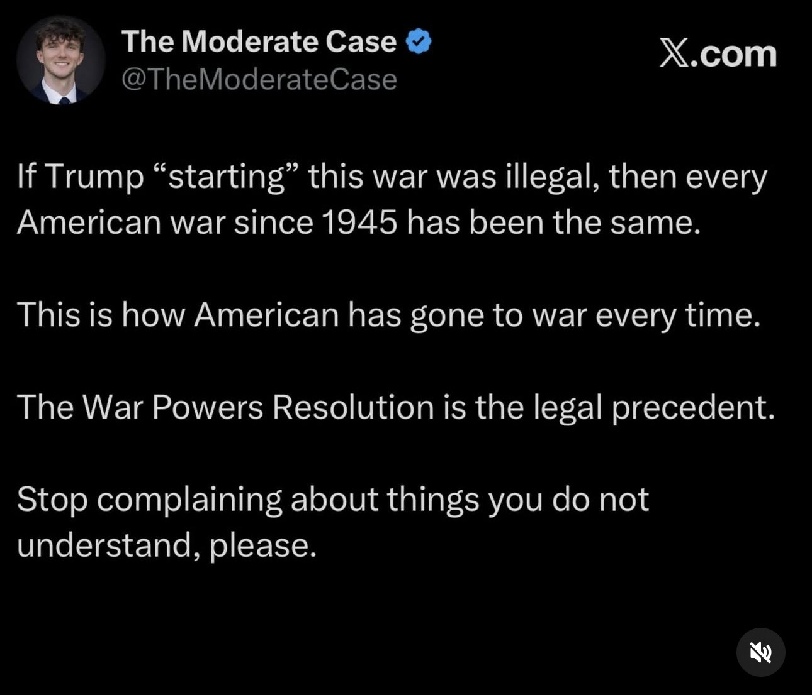
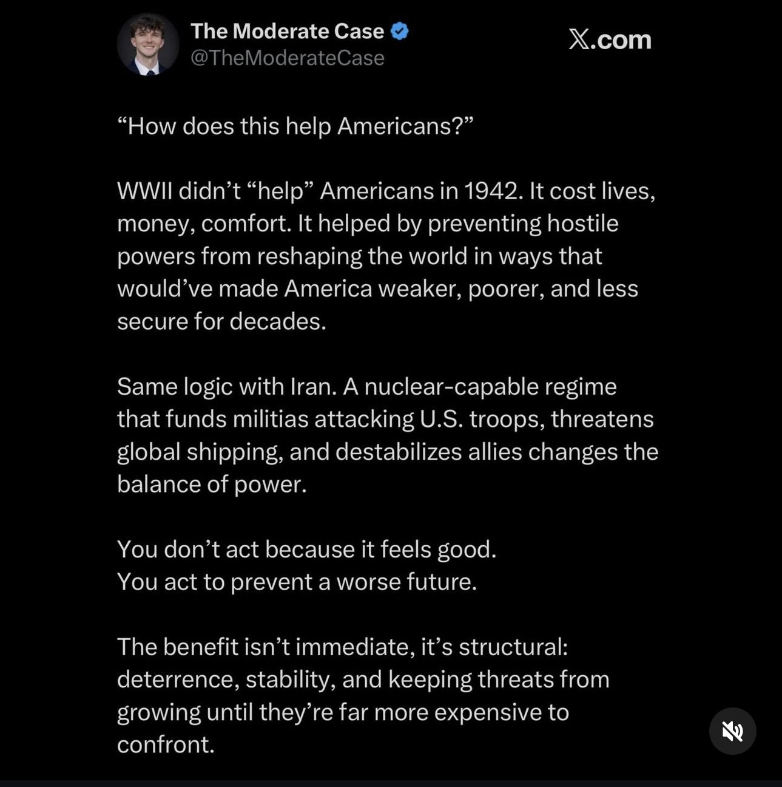
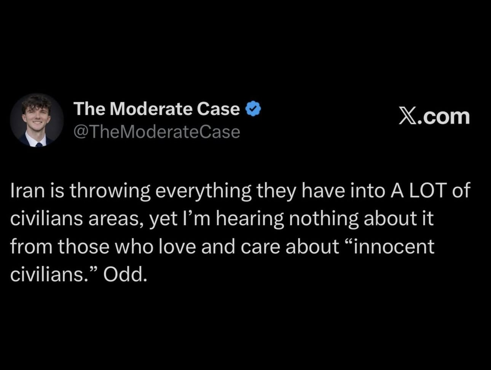

When Condemnation Replaces an Argument: War, Social Media, and the Illusion of Understanding
The first day after the United States began its military campaign against Iran produced an extraordinary volume of confident commentary. Much of what reached my social feeds was not an argument for the operation so much as an argument against the people questioning it. One recurring response to critics who called the attack unprovoked was to catalogue the Iranian supreme leader's abuses, as though evidence of a brutal regime settled the question of whether the United States should have gone to war. Critics were also described as “liberals” reflexively opposing Trump, even though opposition to the operation was not confined to liberals.
That response confuses two questions. Is the target a bad actor? And was this particular action against that target justified, lawful, necessary, and strategically prudent? The first question can matter to the second, but it cannot answer it on its own. One can condemn a regime while asking why Iran was selected, what threat required action at that moment, whether less destructive alternatives were available, how the operation would succeed, and what consequences would follow. Those are not evasions of the moral question; they are the questions a defense of war must confront.
I noticed the same pattern in another set of posts circulated through someone I follow. The posts came from the account “The Moderate Case,” whose framing I regard as propagandistic. I encountered them secondhand rather than by following punditry accounts myself, which I generally avoid for my own mental health. The person reposting them was also sharing arguments about Iranian “provocation,” is an enthusiastic Jordan Peterson follower, and even has a Peterson quotation in an Instagram profile. I have sometimes agreed with the dismissive description of Peterson as “the dumb person’s smart guy”; that is my personal assessment, not evidence against these tweets. Neither my opinion of that account nor my opinion of its audience can establish that any given argument is bad. The claims need to be examined on their merits. Initially, I thought the posts too shallow to deserve an answer. Seeing them spread quickly changed my mind: an argument can be poor and still become influential.
What follows is therefore a critical-thinking exercise, not simply an attempt to score points against a political faction. I will first identify the recurring error by comparing the Iran and Venezuela cases, then test its underlying principle through argumentation theory and reductio. Next I will reconstruct three tweets as charitably as possible, examine their reasoning and factual premises, and consider why the weakest of them may also be especially shareable. Finally, I will ask what this style of discourse does to our capacity for democratic accountability. These notes began as an immediate reaction to the conflict and were expanded with later reporting; the subsequent discussion should be read as an analysis developed over time, not as an account written entirely on the first day.
1. The policy question is not whether the target is evil
Back to contents ↑The central error is a substitution of moral judgment about a target for justification of a particular policy. Saying “Iran's leader is evil” may be true, but it addresses a different question from “Was this operation provoked, necessary, lawful, proportionate, and likely to improve security?” Condemning the target supplies, at most, one consideration in a much larger decision. A brutal regime can still be the object of a military intervention that lacks legal authority, serves poorly defined goals, or creates more danger than it prevents.
The administration offered claims that deserved scrutiny on their own terms. Reuters reported that Trump's stated aims included limiting Iran's ballistic-missile and nuclear capabilities and encouraging regime change, while also reporting a conflict between his claims about a missile threat to the United States and U.S. intelligence assessments. Associated Press reporting likewise described the administration's prevention rationale and the pressure it created to substantiate an imminent threat. Whether force was warranted thus depends on a concrete account of threat, timing, legal authority, alternatives, objectives, and second- and third-order consequences—not merely on a leader's record of abuse.
Selectivity adds another burden. Because many governments commit serious wrongs, moral condemnation cannot explain why Iran, why now, and why this form of action. Possible explanations include direct threat, nuclear risk, regional alliances, energy and shipping concerns, ideology, or domestic politics; each would need its own evidence. Nor is criticism of the campaign neatly reducible to partisanship. AP reported that Republicans including Rand Paul and Marjorie Taylor Greene objected to it. Calling every objector a liberal does nothing to resolve the underlying policy dispute.
A recurring pattern: the Maduro example
A related response appeared after the U.S. operation in Venezuela. Nicolás Maduro was captured in Caracas on January 3, 2026, in a U.S. military operation and taken to the United States to face drug-trafficking charges. For supporters of that operation, “Maduro is bad” was sometimes offered as though it established that seizing him was necessarily legitimate. But a leader's authoritarianism or corruption does not automatically validate a cross-border military seizure. The case raises distinct questions about domestic and international legal authority, sovereignty and precedent, whether the operation was counter-narcotics enforcement or regime change, and whether its effect would be stability or further disorder.
Reporting described strikes in Caracas accompanying the seizure, while Trump also said that the United States would temporarily run Venezuela. These details intensify rather than displace the inquiry into objectives, authority, and regional consequences. The rhetorical shortcut is the same in both cases: shift the question from “Was this action justified?” to “Is this leader a bad person?”; treat an affirmative answer to the second as proof of the first; and leave the questions about costs, endgame, and legality unanswered.
The argument in its strongest and weakest forms
Douglas Walton's approach to argumentation provides a useful vocabulary for diagnosing this move. An argumentation scheme is a recognizable form of defeasible reasoning: its premises may provide initial support, but the inference can fail when its assumptions are tested by critical questions. I will call the recurring shortcut the argument from villainous target to policy justification. This is a working label, not the name of a single canonical Walton scheme; it bundles moral evaluation, a tacit practical argument for doing something, and a leap to endorsing the particular thing done.
The full comparison lays out the compressed public argument alongside the additional premises a genuine policy defense would have to establish:
| Crude public argument | What the argument actually requires |
|---|---|
| P1. Leader or regime X is morally bad, dangerous, criminal, or oppressive. P2. The United States has taken action A against X—bombing, seizure, covert action, sanctions escalation, and so on. C. Therefore, action A is justified, good, or worthy of support. |
P1. X is a seriously wrongful or dangerous actor. P2. If a foreign actor is seriously wrongful or dangerous, that creates a reason to act against that actor. P3. Action A is an appropriate way to act against X. P4. The reasons in favor of A outweigh the reasons against A. P5. The U.S. is entitled to take A in these circumstances. C. Therefore, the U.S. is justified in taking A against X. |
The difference is the point of the exercise. The first premise does almost none of the necessary policy work. The defensible reconstruction must establish relevance, a concrete triggering condition, suitable means, legal authority, comparative effectiveness, acceptable consequences, reliable evidence, and a consistent limiting principle. It must also address the critic's actual objection instead of pretending the critic has denied the target's wrongdoing. If these missing steps are simply assumed, the argument may involve a non sequitur (the conclusion does not follow), a red herring (attention is shifted to the target's character), and a straw man (critics are treated as defenders of the target).
The key questions can be grouped without losing their distinctions: What happened to require action now? Why this target and this instrument rather than another response? Who authorized it under domestic and international law? What alternative options were examined? How is the action supposed to work, and what happens if it succeeds or fails? What evidence supports the underlying threat assessment? Would the same standard be applied to comparable cases—and is the speaker responding to the objection that was actually made? The two tables below make that burden explicit. The first identifies the assumptions concealed by the shortcut; the second supplies the critical questions needed to examine them. These are analytical tests, not claims that every possible military action must fail every test.
Ten hidden assumptions
| Assumption | What it presumes | Analytical category | Core test |
|---|---|---|---|
| A1. Moral badness creates permission to act. | Once X is bad enough, action against X is presumptively warranted. | Relevance | Why does condemnation of X justify this response? |
| A2. The action is responsive rather than opportunistic. | A answers a genuine threat, provocation, or compelling reason rather than convenience, selectivity, ideology, or political usefulness. | Necessity / provocation | What concrete condition triggered action now? |
| A3. The specific action fits the problem. | Because “something should be done,” this thing should be done. | Specificity | Why A rather than a different response? |
| A4. There are no better alternatives. | Diplomacy, containment, deterrence, prosecution, coalition-building, sanctions, or nonintervention are inferior. | Alternatives | What other options existed, and why were they inadequate? |
| A5. The actor has legitimate authority. | The U.S. has the domestic, constitutional, and international authority to take A. | Authority / legality | What legal authority permits A? |
| A6. Selective enforcement is not disqualifying. | It is acceptable to act against X while not acting similarly against comparably bad actors. | Selectivity / consistency | What principled rule explains the selection of X? |
| A7. The action will be effective. | A will reduce the threat, remove the problem, or improve conditions. | Effectiveness | By what mechanism will A achieve its objective? |
| A8. The side effects are acceptable. | Civilian harm, escalation, retaliation, precedent, and destabilization are outweighed by the benefits. | Costs / consequences | What happens if A succeeds, and what happens if it fails? |
| A9. The evidence about X is accurate and relevant. | The cited wrongs are true, current, independently supported, and connected to the operative decision. | Evidence | Are the allegations verified and decision-relevant? |
| A10. Condemning X answers the objection. | Critics dispute whether X is bad rather than legality, prudence, provocation, or strategy. | Dialogue / framing | Is the argument addressing the critic’s actual claim? |
The last assumption is often the decisive one. It is the point at which the argument becomes a red herring: the speaker answers a policy objection with a moral indictment of the target.
The critical questions extend that inventory by separating the standards of relevance, provocation, choice of means, authority, alternatives, outcomes, selectivity, evidence, burden of proof, and framing. This matters because an argument can answer one question without answering the others.
Eleven clusters of critical questions
The framework can be tested through the following eleven clusters. Each cluster preserves a distinct burden that the advocate of action must meet.
| Test | Critical questions |
|---|---|
| A. Relevance | Is the criticism actually about whether X is bad, or whether action A is justified? Does evidence of X’s moral badness bear directly on the propriety of A, or only indirectly? Are the cited wrongs relevant to the specific timing and form of A? |
| B. Necessity / provocation | What concrete condition triggered action A now? Was there an imminent threat, recent provocation, or urgent necessity? If not, why was immediate force, seizure, or escalation required? Does the argument confuse “there is a bad regime” with “there is a present need for this intervention”? |
| C. Specificity | Even if action against X is warranted in general, why is A the right action? What is the chain of reasoning from “X is bad” to “bombing, kidnapping, sanctioning, or covert action is justified”? Could the same premises support a different, less extreme response instead? |
| D. Authority and legality | What legal authority authorizes A under domestic law? What authority authorizes A under international law? Would the same reasoning be accepted if another state used it against a leader it called evil? Does the argument depend on a double standard about sovereignty? |
| E. Alternatives | What realistic alternatives were available? Were nonviolent or less escalatory means attempted first? What evidence shows those alternatives were inadequate? Does the argument prematurely narrow the choices to “do A” or “do nothing”? |
| F. Effectiveness | What is the actual objective of A? By what mechanism is A expected to achieve that objective? What evidence supports the claim that A will work? Has similar action worked in analogous cases? Is the action solving the problem, or merely expressing outrage? |
| G. Costs and consequences | What are the foreseeable short-term harms? What are the foreseeable long-term harms? What risks of escalation, retaliation, destabilization, or anti-U.S. blowback follow? Are civilian, regional, economic, or alliance costs being discounted? What happens if A succeeds? What happens if it fails? |
| H. Selectivity and consistency | Why X rather than other regimes guilty of similar or worse conduct? What principle explains this selection? Is that principle applied consistently across cases? If not, is the argument genuinely moral, or is it a post hoc justification for a preferred target? |
| I. Evidence | Are the claims about X accurate, complete, and current? Are they independently verified or selectively curated? Are atrocities or crimes being cited as a substitute for proving necessity? Is the case relying on vague condemnation rather than evidence tied to the operative decision? |
| J. Burden of proof | Who bears the burden of justifying A? Has that burden been shifted improperly onto critics—“defend X or support A”? Does rejecting A require denying that X is bad? Is moral disgust being used to evade the obligation to justify policy? |
| K. Dialogue and framing | Does the argument answer the opponent’s actual claim? Is it rebutting a straw man—“critics think X is good”? Is it substituting moral theater for strategic reasoning? Does it collapse moral condemnation, legal justification, and prudential wisdom into a single judgment? |
2. Test the principle by applying it consistently
Back to contents ↑Identifying an unsupported premise is useful, but the stronger test is to ask what follows if the premise becomes a general rule. The proposed warrant is simple: whenever a foreign leader is sufficiently evil, coercive action against that leader is justified. A reductio ad absurdum holds that inferential rule fixed and substitutes cases where it produces conclusions we would reject. It does not prove that no military operation can ever be justified; it shows that the target's moral status cannot, by itself, bear the entire justification.
Consider three applications. If Putin is a bad leader, does that mean any state is justified in bombing Russia's leadership, despite the possibility of catastrophic escalation? If the United States has committed serious wrongs, may other states abduct or bomb American leaders? If many governments are oppressive, must the United States be justified in attacking all of them? The examples test different defects—unlimited permissible means, reciprocal double standards, and unworkable selective enforcement—but each exposes the same missing constraint. Without necessity, proportionality, authority, alternatives, and consequences, the rule could license bombing, kidnapping, assassination, torture, indefinite occupation, or invasion wherever a state alleges sufficient wickedness.
The formal structure is straightforward: suppose the principle licenses coercion whenever a leader is bad; recognize that many leaders qualify under that description; notice that it would then license an expansive range of actions against them; reject that unconstrained result; and conclude that moral badness alone cannot suffice. In Walton-style terms, this is a critical test of the hidden warrant—especially the premise that wrongfulness creates permission and the premise that the particular means are appropriate. The crucial question is what non-arbitrary limiting principle prevents the argument from authorizing the same conduct by rival states or against other targets? The question can be made more precise through a six-part generalization test, which also brings out the problems of overbreadth, double standards, and missing constraints.
Universalization and limiting principles
The original generalization challenge asks whether a warrant that sounds plausible in one favored case becomes unacceptable when applied consistently across other countries and types of force. In the crude scheme, the assumption that a wrongful actor creates permission to act and the assumption that the selected means are appropriate both require scrutiny. An advocate must distinguish a reason to do something from authorization to do this particular thing.
Core test: If the principle were applied consistently to similar cases, would it authorize absurd, unlawful, dangerously broad, or unacceptable actions?
- What is the exact general principle connecting “X is evil” to “action A is justified”?
- Would that principle also justify similar actions against many other leaders regarded as evil?
- Would it justify more extreme actions than the speaker intends?
- Would the speaker accept the same principle if used by rival states?
- What limiting condition prevents the principle from collapsing into “any bad leader may be attacked”?
- If no non-arbitrary limiting condition is available, why is the warrant not defective?
This critical question exposes three things at once:
- overbreadth (the rule covers too much),
- double standards (the rule is not accepted symmetrically),
- missing constraints (no limiting principle).
So in the original set, it can function as a standalone test: When the argument’s hidden warrant is generalized consistently, does it yield absurd or unacceptable consequences? If so, the warrant is too broad and cannot justify the conclusion without further limiting premises. If we apply the same logic consistently to parallel cases, does it produce conclusions we would reject as absurd, lawless, or dangerously overbroad? If yes, then the scheme’s hidden warrant is unsound or incomplete.
The harder reciprocity test: apply it to the United States
Applying this standard to one's own country is more revealing than applying it only to geopolitical adversaries. This is a thought experiment, not an endorsement of attacking the United States. Its purpose is to test whether the same warrant remains acceptable when the target changes. The United States has been accused, on substantial grounds, of serious wrongdoing and of materially supporting wrongdoing by other states. The original examples concern lobbying and rent-seeking influence, contested claims of state capture, support for Israeli actions in Gaza, and a history of U.S. interventions and support for abusive actors in Latin America, including cases described in terms of death squads. Those claims differ in evidentiary status and require case-specific care; they should not be bundled into an indiscriminate factual verdict.
The Gaza case illustrates why those distinctions matter. Several human-rights organizations, UN mechanisms, scholars, and other institutions have used the language of genocide, while others have used narrower formulations such as “acts of genocide,” “may amount to genocide,” or a serious risk requiring prevention. The International Court of Justice had not issued a final merits judgment that Israel committed genocide in the period discussed here. States' decisions to intervene in South Africa's ICJ case likewise do not necessarily constitute independent final determinations of genocide. The evidence is complex enough to warrant its own supporting documentation instead of interrupting the reductio with consecutive institutional tables. The full classifications, state interventions, humanitarian organizations, dates, and source links appear in the appendix, Evidence Dossier B — The reciprocity thought experiment.
For the reciprocity argument, the precise disputed label is not doing all the work. The premise can be formulated as alleged or documented grave wrongdoing or material support for such wrongdoing. If that condition alone justified invasion or forcible regime change, the same reasoning could be turned against the United States. Historical U.S. involvement in Latin America—covert operations, military assistance, and support for abusive actors, with the exact “death squad” description depending on the case—provides a further test. Almost anyone who rejects foreign invasion of the United States on this basis must supply limiting conditions that do not appear in the original “bad actor, therefore attack” argument.
The symmetry test leaves the defender of the shortcut with three options: abandon the warrant, qualify it through conditions such as imminence, legal authority, necessity and proportionality, or accept its consequences when other states use it. That is the payoff of the thought experiment. It shifts debate away from an emotionally charged description of the target and back to the rules that determine whether a particular state action is justified.
3. Three tweets, three ways to avoid the hard question
Back to contents ↑The same substitution appears in different rhetorical forms. The following posts illustrate an appeal to precedent, a claim about future strategic benefits, and an accusation of humanitarian hypocrisy. For each I will distinguish the surface message from its strongest plausible reconstruction, examine what the evidence does and does not support, and explain the work the rhetoric performs. The screenshots are included here alongside text transcriptions so the original wording remains searchable and accessible.
Tweet 1 — Custom is not the same as legality

If Trump “starting” this war was illegal, then every American war since 1945 has been the same.
This is how America has gone to war every time.
The War Powers Resolution is the legal precedent.
Stop complaining about things you do not understand, please.
What the tweet claims. Its legal defense has four parts: presidential war-making is familiar, historical repetition creates precedent, the War Powers Resolution supposedly settles the legal question, and critics are ignorant. The decisive movement is from ordinary practice to legal permission. The final insult makes that inference feel authoritative without supplying evidence.
The strongest reconstruction. It is true that presidents have repeatedly used military force since 1945 without a formal congressional declaration of war. One might add that a pattern of executive action has been accepted or tolerated in some circumstances, that the War Powers Resolution regulates presidential introduction of forces into hostilities, and that a contemporary operation is not illegal merely because there was no formal declaration. On those premises the tweet could reasonably reject a crude argument that every undeclared use of force is automatically unlawful. The much stronger conclusion—that this specific operation was lawful—still requires proof of legal authorization and relevant similarity to prior cases.
The premises behind Tweet 1
For clarity, here is that strongest reconstruction in premise-and-conclusion form:
The strongest version of the implied argument is:
- P1. Since 1945, U.S. presidents have repeatedly used military force without a formal declaration of war from Congress.
- P2. This pattern has become the accepted way the United States initiates military conflict.
- P3. The War Powers Resolution recognizes and regulates presidential initiation of hostilities in at least some circumstances.
- P4. If a current action fits within that established pattern, it is not illegal merely because Congress did not issue a formal declaration of war.
- C. Therefore, criticism that Trump’s initiation of hostilities was illegal is mistaken.
That is much more defensible than the tweet’s actual wording, but even this version depends on contested premises: that the earlier cases were legally valid, that the present case is relevantly similar, and that the War Powers Resolution permits rather than merely regulates the conduct at issue.
Where the inference fails. An argument from precedent requires genuinely comparable, legally sound precedents; the fact that prior presidents did something does not prove they were legally entitled to do it. Institutional acquiescence, too, is not the same as constitutional validity. Nor are all post-1945 conflicts equivalent: some rested on specific congressional authorizations, some involved UN or NATO frameworks, some were limited strikes, and others became prolonged occupations. A legal rule or statute can be relevant without supplying the permission that a speaker claims it supplies. The tweet's final “stop complaining” is an ad hominem or poisoning-the-well move: it attacks critics' credibility where a legal argument is required.
Tweet 1: The argument schemes at work
These are distinct moves in the argument, not simply interchangeable names for the same flaw.
| Move or scheme | General form | Application in the tweet | Immediate weakness |
|---|---|---|---|
| Argument from precedent or customary practice | Past relevantly similar cases used action A; those cases were treated as permissible; the current case is similar; therefore the current action should also be treated as permissible. | Past presidents initiated hostilities without declarations of war; those actions occurred and were often politically sustained; Trump’s action is similar; therefore it is permissible. | “It has been done before” does not establish that it was lawful before or that it is lawful now. |
| Argument from legal rule or classification | Rule R governs cases of type T; this is a T-type case; R permits X; therefore X is lawful. | The War Powers Resolution governs presidential uses of force; Trump’s action supposedly falls within its allowed structure; therefore the action is lawful. | The decisive classification premise—whether this operation actually fits the statute’s conditions—is simply assumed. |
| Quasi-argument from institutional acceptance | A practice has been widely accepted by institutions; institutional acceptance creates presumptive legitimacy; therefore the practice is legitimate. | Presidents have often acted this way and Congress often has not stopped them; therefore the practice must be legitimate. | Institutional tolerance, political acquiescence, and legal validity are not the same thing. |
| Ad hominem / poisoning the well | Critics are ignorant; therefore their criticism need not be answered. | “Stop complaining about things you do not understand.” | This is not evidence. It raises the social cost of dissent while avoiding the legal question. |
The War Powers Resolution was enacted to constrain unilateral presidential war-making, including reporting within 48 hours and, generally, a 60-day limit followed by a 30-day withdrawal period absent authorization. Congress can authorize force through a declaration or another statute, including an authorization for use of military force (AUMF); the President is Commander in Chief, but the precise boundary between executive and congressional powers is disputed. Serious legal analysis therefore asks whether this was an initial strike or sustained campaign, what authority the administration identified, whether self-defense or imminence was invoked, whether Congress was consulted, and how the reporting and timing rules applied. The questions are not abstract legal trivia; each probes a premise the tweet needs in order to reach its conclusion.
Tweet 1: Hidden assumptions and legal tests
| Hidden assumption | Why it matters | Questions the tweet must answer |
|---|---|---|
| Repeated executive behavior creates legal legitimacy. | Repetition can establish a pattern of practice, but it does not automatically settle constitutionality. | Were the earlier cases actually treated as legally valid, or merely politically tolerated? Were some of them constitutionally disputed? Does an unconstitutional practice become constitutional through repetition? |
| Post-1945 conflicts are relevantly similar. | They are not all legally or strategically interchangeable: some had explicit congressional authorization, some relied on UN or NATO frameworks, some were limited strikes, and some became large-scale occupations. | Which prior conflicts are the relevant precedents? Are they genuinely analogous in legal authority, scale, duration, purpose, and threat context? |
| The War Powers Resolution authorizes war-starting. | The statute was enacted to check presidential war-making. It requires notice within 48 hours and generally limits unauthorized deployments to 60 days, followed by a 30-day withdrawal period; it is not a blank check. | What exactly does the Resolution authorize? Does it authorize first-strike hostilities, or regulate and report them? Was Congress consulted? Would the operation remain within the statute’s time constraints without congressional approval? |
| No formal declaration means Congress is irrelevant. | Congress can authorize force through an AUMF or another statute, not only through a formal declaration of war. | Was there an existing AUMF or other statutory authorization? Was there an attack, imminent threat, self-defense basis, or emergency claim? What constitutional and statutory authority did the administration identify? |
| Earlier legal stretching validates later stretching. | Even if prior presidents exceeded their authority, that would not legalize a new case. | Why should a disputed earlier practice control the current case rather than count as evidence of repeated evasion? |
| Critics are making only the crude claim “no declaration means illegal.” | Many objections are narrower and more developed: no declaration, no AUMF, no imminent self-defense basis, inadequate consultation, or violation of statutory limits. | What is the critic’s actual claim? Was this a limited strike, a sustained campaign, or a broader war? Is “starting this war” rhetorical shorthand or a legally distinct initiation of hostilities? What substantive point is answered by “you do not understand”? |
Tweet 1: Factual and legal claims
| Claim or inference | Assessment and reason |
|---|---|
| “Every American war since 1945” followed the same model. | Overstated. Military actions have occurred under different statutes, authorizations, legal theories, scales, and institutional contexts. The absence of a formal declaration does not erase Congress's role. |
| “The War Powers Resolution is the legal precedent.” | Misleading. The law regulates and limits executive action; it does not offer a general license for war. See also the Nixon Library's overview. |
| Therefore this operation was lawful. | Not established. The conclusion depends on an authorization or valid legal basis, the operation's nature and scale, and compliance with applicable rules. Congress may use statutes other than declarations, and the division of war powers remains contested. |
The tweet is best understood as a bluff argument: it borrows legally sophisticated vocabulary while skipping the legal classification that would make the conclusion defensible. Its implied chain is “past presidents did it; therefore it is normal; therefore it is legal; therefore dissenters are ignorant.” The critical failure is the step from normality to legality, not the mere observation that formal declarations of war have become uncommon.
Tweet 2 — A possible benefit is not a demonstrated strategy

“How does this help Americans?”
WWII didn’t “help” Americans in 1942. It cost lives, money, comfort. It helped by preventing hostile powers from reshaping the world in ways that would’ve made America weaker, poorer, and less secure for decades.
Same logic with Iran. A nuclear-capable regime that funds militias attacking U.S. troops, threatens global shipping, and destabilizes allies changes the balance of power.
You don’t act because it feels good.
You act to prevent a worse future.The benefit isn’t immediate, it’s structural: deterrence, stability, and keeping threats from growing until they’re far more expensive to confront.
What the tweet claims. This post has a more defensible core than the first: national-security benefits need not be immediate, visible, or free of short-term cost. It invokes World War II as a case in which present sacrifice prevented a much worse future, then treats contemporary military action against Iran as the same kind of investment in long-term security. The argument combines analogy, prediction of negative consequences from inaction, an appeal to security or deterrence, and a simplified portrayal of critics as demanding an immediate personal payoff.
The strongest reconstruction. Some wars impose short-term costs but prevent greater future harms; U.S. involvement in World War II is offered as an example. Iran is said to pose a long-term strategic threat through nuclear potential, Iran-backed armed groups, shipping risks, and pressure on regional allies. Delay might make that threat more expensive to confront, while military action now might degrade or deter it. Therefore, the campaign could benefit Americans indirectly and over time. This is a coherent argument form, but the decisive predicates remain unproven: relevant similarity to the Axis powers, the likelihood of a worsening threat, the capacity of force to reduce it, proportionality of costs, and superiority to less destructive alternatives.
The premises behind Tweet 2
This is the strongest version of the argument in explicit form:
- P1. Some wars impose immediate costs while preventing much greater long-term harms.
- P2. U.S. entry into World War II is an example of that pattern.
- P3. Iran poses a serious long-term strategic threat because it is near nuclear capability, supports armed groups that attack U.S. personnel, threatens maritime commerce, and undermines regional allies.
- P4. Failing to confront serious strategic threats early can make later confrontation more costly.
- P5. Military action now can deter or degrade that threat.
- C. Therefore, military action against Iran can help Americans even if the benefits are indirect, delayed, and not immediately visible.
This is the strongest version of the tweet. It still leaves the hardest steps unproven: whether Iran and the Axis powers are relevantly analogous, whether force reduces rather than increases danger, whether the expected benefits exceed the risks, and whether less destructive alternatives are inferior.
The World War II analogy imports historical moral significance without showing comparable scale, expansionism, capabilities, urgency, or context; U.S. entry into that war also followed a direct attack. A historical comparison must explain its relevant similarities rather than rely on emotional prestige. The post also moves from the modest claim that delayed benefits are possible to the much stronger claim that this campaign is necessary and wise—a motte-and-bailey-like movement. Force can sometimes deter, but it can also harden resolve, increase proxy attacks, escalate conflict, damage alliances, and create harms beyond those attributed to inaction. Even granting the tweet's descriptions of Iran, a threat assessment is not yet an argument for a particular war.
Tweet 2: Argument schemes and rhetorical moves
The World War II analogy, predicted consequences, and deterrence claim are separate inferences. Their weaknesses can be checked independently:
| Move or scheme | General form | Application in the tweet | Immediate weakness |
|---|---|---|---|
| Argument from analogy | Cases A and B are similar in relevant respects; action X was justified or effective in A; therefore X is justified or effective in B. | World War II involved action against dangerous hostile powers before worse outcomes emerged; Iran is presented as a comparable hostile power; therefore military action against Iran is similarly justified. | The analogy must be relevantly, not merely emotionally, similar. The tweet imports the moral clarity of fighting the Axis without showing comparable scale, capability, expansionism, necessity, or strategic context. |
| Argument from negative consequences / prudential reasoning | If we do not do A, serious consequence B is likely; therefore we should do A. | If the U.S. does not act, Iran’s threat will grow and later confrontation will become more expensive; therefore the U.S. should act now. | The argument assumes that inaction produces escalation, that action reduces risk, and that intervention will not create equal or greater harms. Those are the propositions that need proof. |
| Argument from security or deterrence | X poses a credible threat; deterrent or preventive force reduces that threat; therefore force is justified as protection. | Iran threatens U.S. interests and allies; force will deter or degrade Iran; therefore force helps Americans. | Force sometimes deters, but it can also escalate, harden resolve, widen conflict, or increase proxy attacks. “Deterrence” cannot simply be treated as a guaranteed output of violence. |
| Implicit straw framing | Critics deny a modest premise; the tweet refutes that premise; therefore the stronger policy objection is defeated. | Critics are framed as believing that a benefit is unreal unless it is immediate or personally felt. | Many critics are asking whether the threat evidence is solid, whether force is the best tool, what the legal basis is, what the second-order costs are, and whether Americans will be safer. The tweet answers a simplified objection. |
Tweet 2: Hidden assumptions and strategic tests
For each inference, the relevant question is what would have to be true for it to support the policy conclusion.
| Assumption | What must be established |
|---|---|
| Iran is meaningfully analogous to the Axis powers. | In what relevant respects is Iran comparable in scale, capability, expansionism, or threat profile? Was U.S. entry into World War II materially different, including the direct attack on the United States? Is the analogy importing moral legitimacy rather than demonstrating similarity? |
| Military action is preventive rather than provocative. | How likely is the “worse future” being forecast? What evidence supports that probability? Would military action reduce the danger or intensify regional war, retaliation, terrorism, oil shocks, alliance fragmentation, and civilian casualties? |
| Iran’s capabilities and intentions justify immediate coercive action. | What is the concrete threat, to whom, by what mechanism, over what timeline, and at what probability? Does “nuclear-capable” describe a weapon, a breakout potential, a technical capacity, or merely an alarming possibility? |
| The United States can degrade the threat at acceptable cost. | What is the theory of success? What evidence shows this operation will deter rather than provoke? Is there a defined objective, a plausible mechanism, and a credible off-ramp? Have analogous operations historically produced de-escalation? |
| Nonmilitary alternatives are inadequate. | Compared with what alternative policy is force superior—sanctions, diplomacy, containment, inspections, coalition pressure, regional burden-sharing, covert disruption, or deterrence short of war? The real choice is not simply “attack” or “do nothing.” |
| Structural benefit is the relevant measure of helping Americans. | What is the metric—lower attack risk, economic stability, regional balance, alliance credibility, protection of troops, shipping security, or something else? Over what time horizon, and which Americans receive the benefit while bearing the costs? |
| A threatening future is sufficiently predictable to justify present war. | Why should the threat continue to grow, become more hostile, and make later confrontation more expensive? What competing futures—negotiated constraint, regime weakening, internal fragmentation, succession, or regional rebalancing—have been considered? |
What the factual premises establish. The following distinctions are important because acknowledging a real concern does not settle the policy choice.
| Claim | Assessment and supporting context |
|---|---|
| Iran is “nuclear-capable.” | Grounded concern, imprecise term. The IAEA reported in 2025 large stocks of enriched uranium, including more than 400 kg of highly enriched uranium, and regarded that accumulation as serious. That is different from establishing a nuclear weapon, immediate intent, or that war is the best response. IAEA statement. |
| Iran funds militias attacking U.S. troops. | Substantially grounded. U.S. officials attributed repeated attacks to Iran-backed groups: the original sources cited a Defense Department count of 206 attacks across Iraq, Syria, and Jordan from October 18, 2023, into late 2024, with CENTCOM describing more than 150 over a shorter span. State Department discussion. |
| Iran threatens shipping. | Supportable but incomplete as justification. The Strait of Hormuz carried about 20% of global petroleum-liquids consumption and roughly one-fifth of global LNG trade in 2024; Reuters also reported threats to shipping during the escalation. Exposure to a chokepoint does not determine the optimal response. U.S. EIA. |
| Iran destabilizes U.S. allies. | A genuine security concern stated broadly. U.S. officials have characterized Iran and Iran-backed groups as regional destabilizers, but that does not demonstrate the effectiveness or legality of this campaign. State Department briefing. |
The tweet ultimately promises three outcomes—deterrence, stability, and preventing threats from becoming more expensive. Each is a different strategic proposition with a different causal burden. Rather than treat those words as interchangeable expressions of “security,” we need to ask what each would mean in practice.
Deterrence is not a synonym for using force
Deterrence classically tries to prevent an adversary from doing something through a credible threatened cost. Compellence tries to make that actor stop, reverse, or change conduct; containment limits its influence; degradation or warfighting destroys capabilities; and preventive war acts now to avoid facing a stronger future adversary. These concepts can coexist in a strategy, but they describe different mechanisms.
| Concept | Core function |
|---|---|
| Deterrence | “Do not do X”: discourage an unwanted action through a threatened cost. |
| Compellence | “Stop doing X, undo X, or do Y”: force a behavioral change. |
| Containment | Restrict the adversary's scope of influence or escalation. |
| Warfighting / degradation | Directly reduce an adversary's capabilities. |
| Preventive war | Use force now to avoid a feared future strategic disadvantage. |
RAND distinguishes deterrence from compellence in its discussion of the political uses of force and further research on compellence. If forces are already carrying out targeting operations and sustained attacks, the policy is not simply a threatened punishment designed to prevent an initial act. It may be compellence, capability degradation, coercive signaling, preventive war, or several things at once. There can still be intra-war deterrence: an actor might use force to discourage additional escalation after conflict begins. But the relevant prohibited action and mechanism have to be specified.
That requirement matters especially when the conflict has widened. Reuters reported regional retaliation, travel warnings, and spillover risk. Such developments do not prove that deterrence is impossible, but they make it inadequate simply to label a campaign “deterrence” without identifying what is meant to be deterred: a first strike, further proxy activity, regional escalation, nuclear breakout, or something else. The speaker must specify the audience, communication, credibility, causal mechanism, and evidence that force lowers rather than raises the probability of the unwanted event. Otherwise, the word functions as a reassuring label for a policy whose mechanism has not been demonstrated.
Deterrence-specific critical questions
The test is not whether deterrence sounds like a desirable objective, but whether the claim specifies the conduct, audience, and mechanism:
| What a deterrence claim must specify | Critical question |
|---|---|
| The prohibited action | What exactly is Iran being deterred from doing? |
| The audience and communication | To whom was the threat communicated, and was it credible and intelligible? |
| The causal mechanism | Why should these attacks lower rather than raise the probability of the unwanted action? |
| The scope of success | Is the aim to deter an initial attack, proxy activity, regional escalation, or nuclear breakout? |
| The relationship to current combat | Is this really deterrence, or is it compellence, degradation, containment, or warfighting? |
Stability requires a political end state
“Stability” has a different burden. A campaign may weaken an adversary without producing a stable successor order. A plausible stability argument needs an account of governance, legitimacy, transitional authority, security, local viability, financing, sequencing, sustainability, and an exit. Without that, the claim describes a hoped-for result rather than an explanation of how the result will occur.
The historical record makes this uncertainty serious. RAND has described how the U.S. interventions in Afghanistan and Iraq began as forced regime change and developed into long stabilization and counterinsurgency efforts. SIGAR's assessment of Afghanistan identified incoherent strategy, unrealistic timelines, unsustainable institutions, inadequate local understanding, and weak evaluation of outcomes. The Costs of War project estimated at least 4.5–4.7 million deaths, about $8 trillion in costs, and 38 million people displaced across post-9/11 wars. Those figures do not prove every intervention will fail, but they challenge any easy assumption that force ordinarily leads to durable political order. RAND · SIGAR report coverage · Costs of War.
The tweet's implied sequence is to weaken a threatening actor, let a better balance emerge, and thereby make Americans safer. The vulnerable link is the emergence of that better balance. Degradation can instead yield power vacuums, factional conflict, proxy escalation, insurgency, displacement, or dependency on extended U.S. involvement. The original test also asks who would govern afterward, why the transition would be legitimate, what troops and funding it would require, how security would be maintained, and how the new order would survive after departure. The requirements below spell out the institutional and political claims that a stability argument must defend. Until they are answered, “stability” is not a supported consequence of intervention.
Requirements of a stability argument
A stability case has to describe a political and institutional pathway, not just a military result:
| Required element of a stability argument | Question the tweet leaves unanswered |
|---|---|
| Political end state | What specific post-conflict political order is envisioned? |
| Transitional authority | Who governs during the transition? |
| Legitimacy | What makes the new order more legitimate than the old one? |
| Security mechanism | How will short-term security be maintained while preventing power vacuums, factional competition, proxy escalation, and insurgency? |
| Resources and duration | What troop levels, fiscal commitments, institutional capacities, and timelines are required? |
| Sustainability and exit | What evidence shows the system can survive without indefinite U.S. support, and what are the medium- and long-term exit conditions? |
| Historical comparison | Why should this case differ from earlier interventions that produced prolonged disorder, unsustainable institutions, and mass displacement? |
Preventing a worse future requires a forecast and a comparison
“Keeping threats from growing until they are more expensive to confront” is a forecast, not an established outcome. It presumes growth, hostile intentions, material strategic significance, a future increase in the cost of confrontation, and a present intervention that produces a better result. Each premise requires evidence about probabilities and time horizons. Iran's possible futures include not only growing military capacity, but also negotiated constraints, leadership succession, internal fragmentation, regime weakening, regional rebalancing, allied pressure, and continued deterrence or containment short of war. Reducing those possibilities to “attack now or face disaster later” is speculative narrowing.
The alternative to a military campaign is not necessarily doing nothing. Diplomacy, inspections, sanctions with off-ramps, coalition-building, pressure through China and regional actors, maritime measures, covert disruption, and long-horizon economic or political tools may be more or less effective in different combinations. An argument for war must compare these options rather than treating them as nonexistent. Nor is “threat to America” a single measurable quantity. Threats to U.S. civilians, troops, allies, oil markets, shipping lanes, corporations, and broader geopolitical influence involve different beneficiaries and different bearers of risk. A policy that protects one interest may impose substantial costs on another; the tweet does not show that the Americans expected to benefit are the same people asked to carry those costs.
The phrase “nuclear-capable” likewise creates urgency without specifying weaponization, command arrangements, intent, a credible timeline, likelihood of use, or the connection to an imminent threat. A defensible case for preventive action would need to identify a threat to whom, by what mechanism, at what probability, over what time horizon, at what cost, and compared with which alternatives. Tweet 2's strongest insight—that indirect benefits exist—survives scrutiny. Its implied verdict—that the campaign will deliver deterrence, stability, and a safer future—does not follow merely from that insight.
Testing the preventive-threat forecast
These questions make explicit the forecasts, affected interests, and counterfactual choices the slogan leaves unspecified:
| Unargued assumption | What must be shown |
|---|---|
| The threat will grow. | What evidence makes continued growth more likely than weakening, fragmentation, negotiated constraint, succession, or regional rebalancing? |
| The growth will be hostile and strategically significant. | Which capability will grow, toward what purpose, and how will it translate into increased danger? |
| Delay makes confrontation more expensive. | Over what timeline, at what probability, and compared with what costs created by acting now? |
| Military intervention is the best branch in the decision tree. | Why is bombing superior to pressure through China, allied bargaining, sanctions with off-ramps, maritime containment, covert disruption, inspections, regional burden-sharing, or long-horizon political and economic pressure? |
| “Threat” has a clear beneficiary and victim. | Threat to whom—U.S. civilians, troops, shipping lanes, allied states, oil markets, corporations, or geopolitical influence? Who receives the alleged benefit, and who bears the costs? |
| “Nuclear-capable” supplies sufficient urgency. | What is the actual capability, weaponization timeline, intent, command structure, likelihood of use, and connection to an imminent threat to ordinary Americans? |
Tweet 2: Synthesis of the reasoning defects
Taken together, the defects show why the plausible core of the tweet does not establish its stronger policy conclusion.
| Defect | Why it matters |
|---|---|
| False or weak analogy | World War II functions as a prestige analogy. It imports the moral clarity of fighting the Axis into a contemporary case without establishing comparable threat, necessity, evidence, or strategic conditions. |
| Assuming preventive force works | “Do something now” is treated as if it necessarily lowers long-term risk, although intervention can widen conflict and create the very future harms it claims to prevent. |
| Conflating threat with justification for war | Even granting every factual claim about Iran, the conclusion still requires necessity, proportionality, a plausible causal path from force to improved outcomes, and comparison with alternatives. |
| Motte-and-bailey structure | The modest and defensible claim is that some security benefits are indirect and delayed. The much stronger claim smuggled behind it is that this specific action is wise and justified. |
| Moral intimidation through historical grandeur | Invoking World War II creates an atmosphere in which skepticism appears naïve or cowardly. That is persuasive theater, not proof. |
Tweet 3 — An accusation of hypocrisy is not a rebuttal

Iran is throwing everything they have into A LOT of civilians areas, yet I’m hearing nothing about it from those who love and care about “innocent civilians.” Odd.
What the tweet claims. Unlike the first two posts, this one barely attempts to defend the military campaign. It accuses humanitarian or anti-war critics of selective concern. The implied argument is that Iran is endangering civilians, people committed to civilian protection ought to condemn that conduct, and those criticizing U.S. action have not done so. Their supposed silence is then used to impeach their credibility.
The strongest reconstruction. If Iran engages in civilian-endangering conduct, people who profess universal concern for civilian life should not excuse it. If a particular critic systematically condemns comparable misconduct by only one side, that may justify criticism of the critic's consistency. But even if those premises were established, the further conclusion—that the critic's objection to U.S. action is false or unworthy of consideration—does not follow. A person can be inconsistent and correct about a specific wrong. This is the essential weakness of a tu quoque: it substitutes judgment of the speaker for evaluation of the proposition.
The premises behind Tweet 3
The implied conclusions become clearer when reconstructed explicitly:
- P1. Iran is conducting military activity in or toward civilian areas.
- P2. People who claim to care about innocent civilians should condemn any side that places civilians at risk.
- P3. Many critics condemning the invasion are not condemning Iran’s conduct.
- P4. Failure to condemn comparable civilian-endangering conduct suggests selective outrage.
- C1. Therefore, these critics are being inconsistent or selective in their humanitarian concern.
- C2. Therefore, their criticism of the invasion should be treated with skepticism.
That is the strongest available version. Even then, the second conclusion does not follow from the first. A critic’s inconsistency may affect their ethos, but it does not determine whether their criticism is true.
The evidence is also underspecified. “Throwing everything they have into A LOT of civilians areas” gives no incident, date, source, or distinction between deliberately targeting civilians, indiscriminate attacks, military activity near civilians, and incidental civilian harm. “I'm hearing nothing” describes one person's exposure to public commentary, not a systematic survey. The tweet does not identify who “they” are, what those people have said across venues and time, or what amount of condemnation would count as sufficient. A feed shaped by selection, timing, and algorithms cannot by itself establish collective silence or moral indifference.
Tweet 3: Argument schemes and rhetorical moves
The accusation works through several mutually reinforcing rhetorical mechanisms:
| Move or scheme | Application in the tweet | Hidden weakness |
|---|---|---|
| Tu quoque / argument from inconsistency | Critics denounce civilian harm linked to U.S. action but allegedly do not denounce Iranian conduct; therefore their concern is selective and their criticism is suspect. | Even a real inconsistency would not refute the underlying claim. At most, it would show that the critic applies a valid principle inconsistently. |
| Argument from silence | If critics genuinely cared about civilians, they would be vocally condemning Iran; the speaker is “hearing nothing”; therefore they do not genuinely care. | “I’m hearing nothing” is weak evidence. It can reflect limited exposure, timing, selective attention, platform filtering, or failure to look. |
| Implicit moral equivalence | Both actors endanger civilians; moral concern should therefore be expressed symmetrically. | The tweet does not establish that the cases are comparable in scale, intent, foreseeability, responsibility, targeting decisions, or agency. |
| Credibility attack | The alleged hypocrisy is used to discredit future anti-war or humanitarian criticism. | Critic consistency and truth of criticism are separate questions. A hypocrite can still be correct. |
Tweet 3: Hidden assumptions and critical questions
The relevant critical tests concern both the evidence for the charge and whether the charge, even if true, would rebut the underlying criticism.
| Hidden assumption | Critical questions |
|---|---|
| Iran is “throwing everything it has” into civilian areas. | What precisely does this mean—strikes hitting civilian neighborhoods, military assets placed near civilians, indiscriminate attacks, or something else? What examples, dates, and evidence support the claim? Is the language distinguishing deliberate targeting from collateral risk? |
| The relevant critics are actually silent. | Who exactly is being accused? What is the evidence that they said nothing? Is one person’s social-media feed a reliable sample? Have their statements been checked across platforms and time periods? Could algorithms, visibility, or timing explain the perceived silence? |
| A person must comment on every comparable harm to care consistently. | What level of condemnation is required—one post, a public statement, equal frequency, equal intensity, or identical timing? Are the events similar enough to demand the same response? |
| Silence proves indifference or hypocrisy. | Does failure to post establish a moral position? Could attention, expertise, audience, uncertainty, or relevance explain the absence of a statement? |
| Hypocrisy weakens the substantive objection. | Even if critics are inconsistent, does that make their claim about legality, prudence, escalation, civilian harm, or strategic justification incorrect? Is hypocrisy being used as a substitute for answering the objection? |
| The compared civilian-harm cases are symmetric. | Are the actions comparable in scale, intent, foreseeability, targeting, and responsibility? Are critics objecting to civilian harm in general or to the invasion as a specific legal and political decision? Is the tweet shifting the question from “Was the invasion justified?” to “Are the critics perfectly consistent?” |
The argument also assumes that the compared harms are symmetric in scale, intent, targeting, agency, foreseeability, or responsibility; none of that is demonstrated. The narrow concern about selective outrage remains legitimate in principle, but it cannot settle whether the U.S. campaign is lawful, proportionate, strategically wise, or humane. Tweet 3's distinctive feature is that its weakness as a substantive rebuttal may actually contribute to its usefulness as a circulating accusation. To understand that, we need to move from argument evaluation to message design and social diffusion.
4. Why weak arguments can become powerful messages
Back to contents ↑The previous sections examined whether the tweets give us good reasons to believe their conclusions. Their rapid circulation raises a different question: why do messages that bypass those evidentiary burdens feel persuasive and spread? Tweet 3 is especially instructive because it works as an identity cue even when its factual referents remain vague. It does not need every reader to agree on a specific set of critics; readers can supply their own out-group—anti-war activists, liberals, journalists, academics, “the media,” or whoever they already distrust.
This is a form of reader-side completion. The message supplies a familiar accusation and invites the audience to fill its empty slots with their own examples and resentments. The result is a short, morally charged story: the people who profess humanitarian concern are frauds. The speaker can benefit from that interpretation without explicitly naming anyone or demonstrating a pattern. Repeated reposts then provide apparent social proof, while the evidentiary weakness of the original post becomes less memorable than the association it installed.
Ambiguity lowers the cost of accusing and raises the cost of correction
The three ambiguities are distinguishable even though they reinforce one another:
| Ambiguity | How it functions |
|---|---|
| Referential ambiguity | “They” is never defined, allowing the accusation to travel across contexts and attach to different enemies for different audiences. |
| Evidential ambiguity | “I’m hearing nothing” sounds observational and empirical but contains no measurable, readily falsifiable claim. |
| Normative ambiguity | The required level of condemnation is never stated: one tweet, a thread, a public statement, equal intensity, identical timing, or something else. The standard can therefore shift whenever counterevidence appears. |
These three gaps make the accusation adaptable and difficult to disprove. If someone supplies an example of condemnation, the standard can shift: not that critic, not enough condemnation, not soon enough, not “with the same energy.” Making the accusation costs almost nothing; answering it can require identifying the accused, finding statements, checking timing and context, and demonstrating the comparability of cases. The post is thus portable across controversies and resistant to correction not because it offers strong evidence, but because it avoids a precise target and test.
The six features that make the accusation easy to share
These features describe the message's design and appeal, rather than six independent proofs of why a specific post went viral. They explain how an underspecified insinuation can be useful to the people sharing it.
| Viral feature | Why it spreads |
|---|---|
| Moral-emotional charge | “Innocent civilians,” the accusation of silence, and the final “Odd” combine innocence, suspicion, and implied hypocrisy. Research on political diffusion found that each additional moral-emotional word in a large Twitter dataset was associated with roughly a 20% increase in spread. The message activates outrage and self-righteous recognition rather than merely supplying information. |
| Low cognitive load | The inference is easy to parse: a bad thing happened; “they” did not condemn it; therefore “they” are hypocrites. Short format, a clear villain, the familiar trope of double standards, and repeated exposure make the claim fluent and increasingly plausible through the illusory truth effect. |
| Strategic underspecification | The tweet omits who “they” are, what “hearing nothing” means, what standard of condemnation applies, and what the exact facts are. Each reader can map it onto an existing schema—the left, anti-war people, media figures, or human-rights hypocrites—without learning new facts. The post is therefore a reusable template, not merely a claim. |
| Identity affirmation | Sharing the post signals group membership, flatters in-group moral judgment, tells the audience that it has detected fraud, and provides a compact badge of shared suspicion. That social usefulness remains even when the evidence is weak. |
| Portability and remixability | The structure can be detached from this conflict and applied to nearly any dispute: “You condemn X, but why are you silent about Y?” Its portability gives it memetic power. |
| Falsifiability asymmetry | The author names no target and supplies no evidence, but a rebuttal must define the target, gather examples, establish timing and context, and defend the comparison. The accusation is cheap; correction is expensive. |
What the message does socially
Beyond conveying a claim, the tweet can mark a social boundary, compress a large dispute into a memorable frame, and let readers supply their own interpretation. These are the three communicative functions of that design:
| Function | Effect |
|---|---|
| Out-group tagging | It marks a morally suspect class without identifying its members. |
| Narrative compression | It reduces a complex landscape of war, media, law, and humanitarian ethics to one emotionally satisfying story: “the people who preach morality are frauds.” |
| Distributed co-production | Followers complete the propaganda object by supplying the target, the examples, and the emotional context. |
Six stages from accusation to remembered suspicion
The following sequence tracks transmission at the level of individual encounters. It complements, rather than replaces, the five-layer synthesis that follows.
| Stage | Function |
|---|---|
| 1. Ambiguous accusation | A claim of selective outrage is made without specifying the target or providing evidence. |
| 2. Reader-side completion | The audience supplies the implied target: “those people.” |
| 3. Affective reward | The reader experiences the satisfaction of recognizing hypocrisy in an enemy camp. |
| 4. Low-friction sharing | The claim is vague, moralized, short, and easy to repeat. |
| 5. Retweet-driven legitimacy | Repetition and endorsement substitute for substantiation. |
| 6. Memory consolidation | What remains is not the lack of evidence but the association: the other side does not truly care about civilians and is hypocritical. |
The five-layer transmission process
1. Message design: an immediately legible moral cue. The tweet combines emotionally charged references to innocent civilians, a familiar allegation of hypocrisy, a one-step inference, and the dismissive “Odd.” It is short, easy to understand, and easy to remix as “you condemn X, but why are you silent about Y?” That structure provides narrative compression: a complex dispute about war, law, civilian protection, and accountability becomes a simple contest between moral concern and supposed fraud. It also invites distributed co-production, because the audience supplies the unnamed target, imagined evidence, and emotional setting. Research on moralized political diffusion found that an additional moral-emotional word was associated with roughly a 20% increase in spread in the studied Twitter dataset; that association does not prove this particular post was engineered or caused to spread by any one feature. Research on moral-emotional language.
2. Platform amplification: social usefulness is rewarded. Morally charged, conflict-ready content is easy to react to and pass along, and sharing it can affirm group membership. A repost becomes a small performance of belonging and moral acuity: the sharer signals that they recognize the other side's hypocrisy. Research on computational propaganda describes how platforms, algorithms, data-driven targeting, and sometimes automation shape political communication; a post can exploit the same incentive environment without any evidence of bot activity or a centrally coordinated campaign. A major Science study found that false news traveled farther, faster, more broadly, and more deeply than true news in the Twitter dataset studied, with human sharing playing an important role. That finding should not be misread as a specific classification of Tweet 3 as “false news”; it supplies context for how novelty and emotionally engaging material can diffuse. Computational propaganda · True and false news diffusion.
3. Cognitive uptake: an existing schema does the work. A reader who already believes political opponents are hypocritical can process the tweet with almost no new information. That schema activation makes the allegation feel obvious, while its low cognitive load increases processing fluency. Moral emotion encourages transmission; visible endorsements provide social proof; and repeated exposure can contribute to the illusory truth effect, in which familiarity raises perceived credibility. The effect depends on conditions and coherent content, not on an automatic universal law of belief. The analytical point is that easy recognition and repeated assertion can substitute, in a reader's experience, for independent support. Illusory-truth review · Semantic coherence qualification.
4. Memory consolidation: the accusation outlives its evidence. Readers may later forget who was allegedly silent, whether specific statements were checked, or what evidence supported the charge. What remains is an accessible association: those critics are selective; their humanitarian concern is fake. Retweets and repetitions can strengthen familiarity and turn an unsupported insinuation into a readily available social shorthand. The literal proposition becomes less important than the moral category it helps maintain. The six-stage sequence above shows how that association can form through successive moments of accusation, completion, sharing, endorsement, and recall.
5. Downstream interpretation: future criticism arrives pre-labeled. Once the category is familiar, later objections to U.S. policy can be treated not as new arguments to evaluate but as examples of the already identified “hypocritical” out-group. The accusation functions as preemptive inoculation against dissent: it does not refute later claims; it prompts readers to discount the people making them before hearing the claims. That is a discourse-level effect, not knowledge about the underlying conflict. The life cycle is message design, platform fit, fluent uptake, repetition-based credibility, identity tagging, and distortion of future conversations.
This framework does not require assuming that the account consciously planned every consequence. The observable structure is enough to explain its rhetorical affordances. The critical distinction is between what the post establishes about the world—which is very little without specifics—and what it enables people to do socially: identify allies and enemies, feel perceptive, share an emotionally satisfying accusation, and approach subsequent criticism with suspicion. In that sense, the post is better at propagating a frame than proving a claim. The tables in this section separate design, social function, propagation, psychological uptake, and downstream interpretation rather than presenting those ideas as competing explanations.
Five cognitive mechanisms involved
The central psychological concepts can be summarized in a compact map. These mechanisms help explain why an unsupported frame can feel intuitively plausible without implying that every reader responds identically.
| Mechanism | Role |
|---|---|
| Schema activation | Activates the preexisting belief that political opponents are hypocrites. |
| Processing fluency | Makes the accusation easy to understand, repeat, and remember. |
| Moral contagion | Carries outrage efficiently across networks. |
| Social proof | Visible endorsement increases perceived plausibility. |
| Illusory truth | Repetition makes the frame feel established even without new evidence. |
The five-layer model at a glance
The final matrix gathers the argument into a single overview: what the message offers, how platforms may amplify it, what a reader does with it, what survives in memory, and how it shapes later debate.
| Layer | Description |
|---|---|
| 1. Message design: built for transmission, not proof | Moral-emotional language, a one-step inference, undefined targets, and a portable format make the tweet easy to circulate. The diffusion research matters here because the content is engineered around precisely the kinds of moralized cues associated with greater spread. |
| 2. Platform amplification: the algorithm likes this shape | Conflict, outrage, rapid comprehension, in-group/out-group cues, and easy repostability fit engagement systems. This is the environment described by computational-propaganda research: platforms, algorithms, and data-driven amplification shaping public opinion even when the content is thin on evidence. |
| 3. Cognitive uptake: easy claims get believed and shared | Readers need no new facts, only the familiar schema “the other side is hypocritical.” Fluency and repetition increase perceived accuracy and can increase willingness to share misinformation. The claim needs to be easy, repeated, and socially endorsed more than it needs to be well supported. |
| 4. Memory consolidation: the evidence drops out | People may forget who was accused, what evidence existed, and whether the claim was substantiated. What remains is a compressed category-level heuristic: critics of U.S. policy are selective, morally fake, and part of “those hypocrites.” Repetition strengthens the familiarity-based memory trace. |
| 5. Downstream discourse effects: future criticism is pre-labeled | Later arguments are routed through the installed frame rather than judged on their merits. The post becomes a form of preemptive inoculation, changing the default interpretation of future dissent without rebutting it. |
5. The “you too” trap and the standards we owe ourselves
Back to contents ↑Tweet 3 invites a familiar sequence. Someone objects to U.S. military action; another person responds, “But Iran harms civilians too.” The critic can answer with allegations about U.S. actions, and the defender can deny those reports or produce yet another comparison. I could, for example, cite reporting attributed here to Reuters about a U.S. strike hitting a girls' school and killing approximately 160 girls, and reply “you too.” I could also point to perceived inconsistencies among conservatives who previously opposed foreign entanglements or funding for Ukraine, or who minimized Russian attacks on civilians and infrastructure while Trump's relationship with Putin became more accommodating. These examples may expose inconsistent rhetoric in particular cases, but trading them back and forth does not resolve the policy question.
The exchange easily becomes a race to the bottom. Each side widens its undefined “they” category, selects examples that embarrass the other side, and shifts from factual standards to a contest over tribal moral standing. What began as a dispute about law, prudence, proportionality, civilian protection, and consequences is recast as a contest over who is morally fake. That is the tu quoque trap: the fact that another actor also does something wrong does not establish that the action under examination is acceptable. Nor does a critic's imperfect consistency make the critic's substantive claim false.
There is, moreover, a reason Americans might scrutinize their own government's conduct more intensely than that of an adversarial regime. Equal concern for civilian life does not require identical distributions of public attention or political responsibility. Three asymmetries explain why this is not necessarily hypocrisy.
Institutional asymmetry. A wealthy, technologically advanced military with extensive intelligence, precision systems, legal review, command oversight, and surveillance capabilities possesses greater capacity to prevent wrongful harm and should be evaluated with that capacity in mind. The appropriate question is not simply whether an adversary behaves brutally. It is whether U.S. institutions exercised the care their own resources and responsibilities should make possible, particularly when civilian harm results. Civilian casualties should not be waved away as an undifferentiated “cost of war” without examining decisions, safeguards, proportionality, and avoidability.
Normative asymmetry. The United States represents itself as committed to constitutional government, the rule of law, human rights, and civilian protection. Holding it to those professed commitments is internal critique, not special pleading for Iran. If our standards are meaningful, they do not disappear when an opponent violates them. Indeed, the assertion that the United States is distinguishable from a brutal theocracy loses meaning if the answer to every alleged failure is that the other side behaved badly too.
Democratic-accountability asymmetry. U.S. citizens have a particular political relationship to—and means of influencing—the actions of their own government. They can scrutinize its authorization, leadership, resource use, targeting, and response to civilian harm in a way they cannot directly govern the conduct of an adversary state. Concentrating more attention on one's own government's decisions can therefore be a legitimate exercise of civic responsibility, not evidence of a selective moral principle. Different agency, capacity, claimed standards, and channels of accountability can justify different emphases in criticism even while the underlying moral concern for civilians remains universal.
Tweet 3 collapses two questions: Are particular critics consistent in their rhetoric? and Does U.S. conduct meet the standards by which it should be judged? The first can be worth discussing, especially when someone explicitly claims universal concern and systematically excuses comparable abuses. But it cannot answer the second. A citizen can coherently condemn Iranian attacks on civilians and demand that U.S. policy meet more demanding legal, institutional, and democratic standards. Our obligations are not indexed downward by the enemy's brutality. A serious debate returns to the original questions: what the government did, by what authority, with what foreseeable harms, under what safeguards, and to what end.
6. Conclusion: feeling informed is not the same as understanding
Back to contents ↑The deeper problem is not that any one tweet wins an argument. It is the reward structure surrounding this kind of content. A compressed accusation can flatter what readers already believe, provide an instant moral position, and make them feel perceptive and socially aligned with little intellectual effort. Likes, reposts, and repeated endorsements then turn that feeling into apparent legitimacy. The result is not necessarily understanding but felt understanding: the psychological satisfaction of having recognized the answer without having done the work of testing it. That is how an unsupported conclusion can become more compelling than an uncertain but careful inquiry.
At scale, this pattern can erode habits of reasoning. Serious public debate requires charity toward opposing arguments, patience with uncertainty, care about evidence, precision in the use of concepts, and willingness to distinguish an objection to policy from sympathy for the policy's target. Rapid moralized exchanges reward something else: reactive certainty, vague categories, selective attention, and the pleasure of identifying a politically suspect out-group. With repetition, these habits shape how later claims are interpreted. A feed can train people not merely to hold a mistaken opinion, but to treat the activities needed to correct it as unnecessary or even disloyal.
That is how discourse decays: not only through spectacular falsehoods, but through a steady accumulation of small, emotionally satisfying messages that provide the sensation of knowledge while avoiding the burdens of argument. In these debates the relevant questions are not whether Iran's leadership deserves condemnation, whether presidents have used force before, whether delayed strategic benefits are possible, or whether some critics are inconsistent. They are whether this action, by this government, at this time, under these legal and strategic conditions, was justified. If we stop asking those questions, certainty and belonging will have displaced the discipline of thought.
Appendix: Evidence Dossier B — The reciprocity thought experiment
Back to contents ↑The following material documents how the essay distinguishes institutional conclusions, narrower formulations, state participation in litigation, and humanitarian organizations’ language. Their evidentiary and legal status should not be conflated. This dossier supplies context for the reciprocity test; none of these allegations, classifications, or sources independently argues that invasion of the United States would be justified.
There is still no final ICJ merits judgment that Israel has committed genocide in Gaza. The case remains ongoing, and states were still filing interventions as late as late 2025. The evidence therefore needs to be separated by the strength and type of institutional formulation rather than collapsed into a single undifferentiated list.
Institutional findings and formulations
| Category | Organization or institution | Public formulation |
|---|---|---|
| Explicit genocide conclusion | Amnesty International | Concluded in December 2024 that Israel “is committing genocide against Palestinians in Gaza.” |
| Explicit genocide conclusion | FIDH (International Federation for Human Rights) | Described Israel’s conduct in Gaza as genocide and said the evidence was accumulating. |
| Explicit genocide conclusion | UN Special Rapporteur Francesca Albanese | Her reports characterize Gaza as genocide and as “genocide as colonial erasure.” |
| Explicit genocide conclusion | UN Independent International Commission of Inquiry on the OPT, including East Jerusalem, and Israel | Concluded in September 2025 that Israel “has committed genocide” in Gaza. |
| Explicit genocide conclusion | B’Tselem | Concluded in 2025 that Israel is committing genocide in Gaza. |
| Explicit genocide conclusion | Physicians for Human Rights Israel (PHRI) | Concluded in 2025 that the destruction of Gaza’s conditions of life amounts to genocide. |
| Explicit genocide conclusion | International Association of Genocide Scholars (IAGS) | Passed a 2025 resolution saying the legal criteria are met to establish that Israel is committing genocide in Gaza. |
| Explicit genocide conclusion | Euro-Med Human Rights Monitor | Published a report explicitly framed around “Israel’s Genocide.” |
| Explicit genocide conclusion | ECCHR (European Center for Constitutional and Human Rights) | Said it had reached the conclusion that, under international law, Israel is committing genocide in Gaza. |
| Narrower genocide-linked formulation | Human Rights Watch | Said Israeli authorities are responsible for “acts of genocide” and that the pattern “may amount to the crime of genocide.” Its 2026 world report also refers to atrocities including “acts of genocide.” |
| Narrower genocide-linked formulation | UN experts in group statements | Referred to an “unfolding genocide” and urged states to act. |
| Narrower genocide-linked formulation | Center for Constitutional Rights (CCR) | Said there was a “plausible and credible case” that Israel was attempting to commit, if not actively committing, genocide; later CCR materials refer to Israel’s “unfolding genocide.” |
The distinction matters. Some institutions make an explicit categorical finding; others use narrower language such as “acts of genocide,” “may amount to genocide,” “plausible risk,” or “unfolding genocide.” Those formulations are all relevant, but they are not identical.
States and the ICJ case
There is no neutral, universally accepted count of countries that have formally and definitively concluded that Israel is committing genocide as a legal determination. Governments use different language, and support for or intervention in a legal proceeding does not necessarily mean that the intervening state has independently reached a final merits judgment.
By 30 October 2024, the UN’s regional information center reported that 14 countries had either announced an intention to intervene or filed intervention papers in South Africa’s ICJ case: Nicaragua, Belgium, Ireland, Colombia, Libya, Egypt, Cuba, Mexico, Palestine, Spain, Türkiye, Chile, Maldives, and Bolivia. The same source stressed that interveners do not formally take sides merely by intervening. Three additional countries filed in 2025—Belize on January 30, Brazil on September 19, and Comoros on October 29—producing a documented total of 17 countries, excluding South Africa, that had by the end of 2025 announced support or intervention or formally filed in relation to the genocide case.
| Prominent state | Documented role |
|---|---|
| South Africa | Filed the ICJ case alleging genocide. |
| Brazil | Formally intervened in the genocide case in 2025. |
| Türkiye | Formally sought to intervene and has publicly described Gaza as genocide. |
| Spain | Intervened in the case; senior Spanish officials have also used genocide language publicly. |
| Ireland | Announced and later filed an intervention. |
| Colombia | Listed by the UN among states that filed an official intervention request. |
| Chile | Listed by the UN among states that filed an official intervention request. |
| Mexico | Listed by the UN among states that filed an official intervention request. |
Humanitarian organizations
| Organization | Classification and wording |
|---|---|
| Doctors Without Borders / Médecins Sans Frontières (MSF) | A clear example of explicit institutional genocide language. In September 2025, MSF published “Doctors cannot stop genocide — world leaders can,” saying governments were complicit in “Israel’s genocide in Gaza.” Its Gaza war page says Israel is “prolonging its genocide,” and an October 2025 letter from its international president says “Palestinians in Gaza are enduring genocide.” |
| Oxfam | Uses strong genocide-linked language, but the material I found is not as clean an independent blanket finding as MSF or Amnesty. In March 2024, Oxfam said Israel was failing to take measures “to prevent genocide,” which is narrower than concluding that genocide was being committed. By September 2025, it was publishing statements that relied partly on the UN Commission’s genocide finding while urging action. |
| Save the Children | Also tends to use narrower language. It has repeatedly said states must act to prevent genocide, referred to a “plausible risk of genocide,” and later cited the UN Commission’s conclusion. Based on the material I found, it is less clear that Save the Children issued a distinct institutional legal conclusion in the same direct form as MSF or Amnesty. |
This is the careful classification: explicit institutional findings, narrower genocide-linked formulations, state participation in legal proceedings, and humanitarian organizations whose language ranges from a direct conclusion to a prevention-oriented warning.
Returning to the symmetry test
Israel is the largest cumulative recipient of U.S. foreign aid by far. The U.S. sends Israel money as part of its military-industrial complex, and that funding increased during the Gaza genocide. In the terms of this thought experiment, the U.S. deliberately backed Israeli decisions to execute, terrorize, mutilate, and murder non-combatants. Large-scale lobbying influence in U.S. politics is also well documented, with federal lobbying revenues and spending at record levels in recent years; that makes the broader premise about concentrated influence recognizable even if “state capture” remains a contestable characterization.
None of this independently establishes that an attack on the United States would be justified. It establishes the premise necessary for the reciprocity test: the U.S. can also be accused, on substantial grounds, of grave wrongdoing or material support for it. If “this state does grave wrongs, therefore coercive attack on it is justified” is accepted as a sufficient warrant, the same logic can be turned against the U.S. and produce a conclusion most people would reject.
The same reasoning applies to historical U.S. conduct in Latin America. U.S. intervention in the region has been recurring and has often involved covert operations, military aid, and support for abusive actors, although the exact “death squad” characterization depends on the case and wording. If those wrongs automatically licensed foreign invasion of the United States, the principle would plainly be overbroad.
The strengthened Walton-style critical question is therefore:
If the warrant is that grave wrongdoing by a state or leader is enough to justify coercive attack, would that same warrant also justify other states attacking the U.S. on the basis of U.S. wrongdoing? If that reciprocal application is unacceptable, what limiting principle prevents the warrant from collapsing into an overbroad and inconsistent rule?
That question forces the advocate into one of three positions: reject the warrant, add limiting conditions such as imminence, legal authority, necessity, and proportionality, or accept a principle they almost certainly do not want to accept.
If “they do grave wrongs” is enough to justify invasion, then the same logic would justify invading any powerful state, including the U.S., whenever it backs atrocities or abusive foreign interventions. Since that principle becomes unacceptable when generalized, the original argument is missing essential constraints. Framing the premise as “alleged or documented grave wrongdoing” prevents the thought experiment from hinging on any single disputed label. It keeps the reductio focused on the logic rather than allowing the discussion to be diverted into a side fight over terminology.
References and source material
Back to contents ↑The main essay also links to sources at the point of discussion. The following retains the original institutional source inventory and the separate strategic-studies and diffusion references while consolidating repeated references.
Institutions, the Gaza proceedings, and related reporting
- International Court of Justice — Brazil files a declaration of intervention in the proceedings ...
- Amnesty International — Amnesty concludes Israel is committing genocide in Gaza
- FIDH — One year of denouncing the genocide of Palestinians in Gaza
- United Nations — Genocide as colonial erasure - Report of Francesca ...
- OHCHR — Israel has committed genocide in the Gaza Strip, UN ...
- B'Tselem — Our Genocide
- רופאים לזכויות אדם — Genocide in Gaza
- Reuters — Israel is committing genocide in Gaza, scholars' ...
- Euro-Med Human Rights Monitor — New report.. De-Gaza: A Year of Israel's Genocide and the ...
- ECCHR — The ongoing genocide in Gaza:
- Human Rights Watch — Israel's Crime of Extermination, Acts of Genocide in Gaza
- OHCHR — End unfolding genocide or watch it end life in Gaza: UN ...
- Center for Constitutional Rights — EMERGENCY LEGAL BRIEFING PAPER
- UN Regional Information Centre — South Africa vs Israel: 14 other countries intend to join the ICJ case - United Nations Western Europe
- International Court of Justice — Belize files a document containing an application for ...
- International Court of Justice — The Comoros files a declaration of intervention in ...
- Reuters — Brazil to join South Africa's Gaza genocide case against ...
- Reuters — Turkey submits official request to join ICJ genocide case ...
- Reuters — Spain requests to intervene in South Africa's Gaza genocide case against Israel at ICJ
- msf.org — Doctors cannot stop genocide- world leaders can
- Oxfam International — Israel government continues to block aid response despite ...
- Save the Children International — GAZA: 20000 CHILDREN KILLED IN 23 MONTHS OF WAR
Strategic-studies and historical context
- “What RAND Research Says About Counterinsurgency, Stabilization, and Nation-Building”
- “Final inspector general report details all the ways the U.S. failed in Afghanistan”
- “Findings” — Costs of War, Brown University